案例介绍⚓︎
随着NLP（Natural Language Processing）技术的发展，NLP的应用场景正在逐渐扩大，这大大地方便了我们的生活。其中，TTS（Text To Speech）的应用在生活中极为广泛。
在过去，许多城市的公交及地铁报站的语音皆为人工录制，线路的临时变更等各种因素导致不得不多次重复录制语音内容，但是应用TTS技术之后，我们可以轻易地生成语音，而无需重新录制语音内容。再者，如今各类手机厂商、智能家居系统、车载系统等的语音助手也在广泛应用该技术，这让你的手机、音响和你的车可以开口“说话”了。曾经科幻电影才有的情景，突然就在不知不觉间成为了现实。
对于个人而言，TTS也极大地改善了我们的生活。在过去，对于视障人士而言，阅读是一件极其困难的事情，因为他们需要首先先学习盲文，并且只能购买资源十分有限的盲文书籍来阅读。而且，由于盲文的表达能力不及自然语言，阅读盲文的速度也不及正常阅读的速度，这进一步影响了他们的阅读体验。然而，利用TTS技术，我们可以轻易让计算机朗读现有的电子版书籍，从而帮助他们实现无障碍“听书”。再者，对于工作繁忙的上班族，他们也可以利用平时在路上通勤的时间听书，让通勤不再枯燥。
由于现在TTS的技术已经较为成熟，微软就提供了完整丰富的TTS-api，让我们无需关注TTS内部复杂的实现，这极大地降低了企业或个人开展TTS相关业务的难度。在此案例中，我们将学习如何利用微软的TTS-api快速构建一个文本朗读的桌面应用程序，从而实现“听书”。
先修知识⚓︎
无需先修知识。
我们在案例中使用的微软的认知服务（Cognitive Services）下的语音服务，可以让我们在不了解TTS知识的情况下，快速实现TTS功能，完成桌面应用的开发。
什么是Azure认知服务?
Azure 认知服务是 API、SDK 和服务，可帮助开发人员生成智能应用程序，而无需具备直接的 AI 或数据科学技能或知识。 开发人员使用 Azure 认知服务能够轻松地将认知功能添加到其应用程序中。 Azure 认知服务的目标是帮助开发人员创建可以看、听、说、理解甚至开始推理的应用程序。 Azure 认知服务中的服务目录可分为五大主要支柱类别：视觉、语音、语言、Web 搜索和决策。
案例核心知识点⚓︎
该案例涉及了以下几个知识点：
- TTS-api的申请和使用
- TTS应用的构建
- TTS功能的实现
上述内容将会在应用的构建中涉及。
虽然我们的案例并没有涉及TTS核心技术的开发，但是在开始之前，我们还是有必要简单了解TTS的基本原理。TTS的实现涉及了极其繁多和复杂的步骤，在看完之后，你或许能够体会到TTS核心技术开发的困难所在，从而理解利用一个TTS-api究竟能给开发者带来多大的便利。
TTS基本原理⚓︎
传统常见模型⚓︎
TTS的常见模型通常将文本转语音任务分解成两个部分：文本分析（Text Analysis） 和 语音合成（Speech Synthesis）。先是对输入的文本进行分析，提取出用于生成语音的信息，再利用特定的算法合成出语音。
1. 文本分析⚓︎
该部分主要是对输入文本进行分析，提取出语音合成必需的信息，如音素、语调等。
通常有以下几个步骤： * 利用语句切分算法，将输入的文本切分成独立的语句 * 对于每个句子，我们需要进一步分析词语，将句子分词成连续的Token序列 * 分析Token，由于Token可能包含数字、日期等非自然语言，因此我们需要使用一定的规则将这些非自然语言转换成自然语言 * 进行基础的语音语调分析，如找出语句中的重点部分等
其中，上述的每一个步骤都有各自的算法，对于不同的任务可能有着对应不同的实现，由于篇幅有限，在此不再展开，感兴趣的同学可以查阅《Text-to-Speech Synthesis》。
2. 语音合成⚓︎
该部分的工作是利用文本分析提供的信息，合成出相应的语音。由此可见，如果文本分析提取的信息不够准确，势必会导致生成的语音效果不佳。除此之外，不同的语音合成算法也会对生成的语音的效果有影响。
目前，语音的合成主要有以下几类方法：
-
波形拼接法
在合成之前，我们会预先录制大量语料，预先录制的语音可以通过波形片段的形式储存在数据库。在合成阶段，我们需要把我们分析出来的词语编码为音素，再通过查询预先录制的语音数据库，找出尽可能匹配的声音波形片段。当选出特定的波形片段序列后，我们可以使用信号处理的方式将它们拼接在一起，形成连续的声波语音。通常来说，拼接法生成的语音最为自然。常见的方法有：单元选择合成（Unit Selection Synthesis）、双音合成（Diphone Synthesis）、特定领域合成（Domain-specific Synthesis）。
-
参数生成法
参数生成法是通过分析语音中的参数如基频、发声、音长等，建立声学模型，再使用不同的参数组合转化为声波。参数生成法在生成语音时不会像波形拼接法一样，使用预先录制的语音，而是通过参数和模型生成一段语音。当然，利用这种方法也需要预录制语音，但是需要录制的内容会少于波形拼接法，且录制下来的内容主要用于学习参数，不直接用于生成内容。常见的方法有：共振峰合成（Formant Synthesis）、隐马尔可夫模型合成（Hidden Markov Model Synthesis）等。
深度学习方法⚓︎
除了传统的常见模型以外，如今也有不少团队尝试使用深度学习来实现TTS。深度学习的方法通常不会明显地划分文本分析和语音合成部分，而是利用了深度神经网络（Deep Neural Networks），通过特定的网络结构和训练大量的文本和语音数据，实现端到端的文本转语音。例如，Google的Tacotron、DeepMind的WaveNet等。
其他模型⚓︎
1. 信号到信号模型（Signal-to-Signal model）⚓︎
在此模型里，处理过程可以看作直接将文本信号转换为语音信号，而不再显式地划分文本分析和语音合成的阶段。例如，上述的深度学习方法。其中，谷歌的深度学习模型Tacotron便是实现了端到端的TTS转换。
2. 流水线模型（Pipelined model）⚓︎
熟悉编译原理的同学应该会对此模型比较熟悉。流水线模型将任务划分了不同的模块，每个模块负责特定的任务，上个模块的输出将作为当前的输入，当前的输出也将作为下个模块的输入。许多Signal-to-Signal的模型便是使用了流水线模型来实现的。
我们在这里只提到了部分模型，更多的模型请查阅《Text-to-Speech Synthesis》。
环境与工具⚓︎
操作系统：Windows 10
开发环境：Visual Studio 2019
开发语言：C#
注：在安装Visual Studio 2019时，请确保已勾选“.NET 桌面开发”。
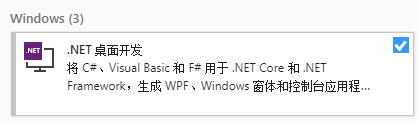
推荐学习时长⚓︎
该案例推荐学习时长为：1.5小时
应用的构建⚓︎
该案例利用了Azure的TTS-api服务构建了一个文本朗读的桌面应用程序，实现了中文文本转语音，并能够保存生成的音频文件。
构建分为以下几个步骤： 1. 申请TTS-api 2. 构建窗体界面 3. 调用api实现TTS
申请TTS-api⚓︎
Azure提供了30天的免费使用版，如果需要注册免费试用，请转到试用认知服务或参考 B04-定制化－语言理解应用案例－智能家居 中的申请试用语音转文本。
-
完成注册或登录Azure账户之后，请按照在Azure中创建语音资源的指引申请TTS-api。
-
完成TTS-api的申请后，登录Azure主页，点击“最新资源”下的“TTS-api”。
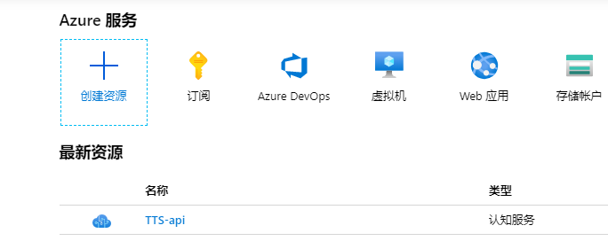
-
进入“TTS-api”后可以查看自己的**Key**和**终结点**，你需要记下它们，因为这将在后续的开发中使用。
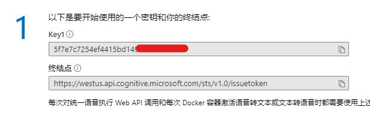
构建窗体界面⚓︎
-
打开Visual Studio 2019，选择“创建新项目”。
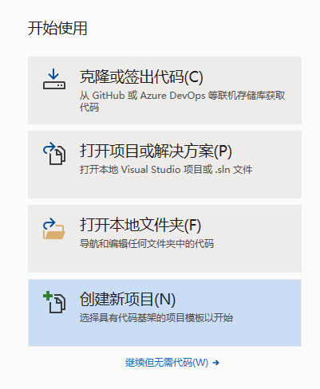
选择语言为“C#”，选择“Windows窗体应用(.NET Framework)”。
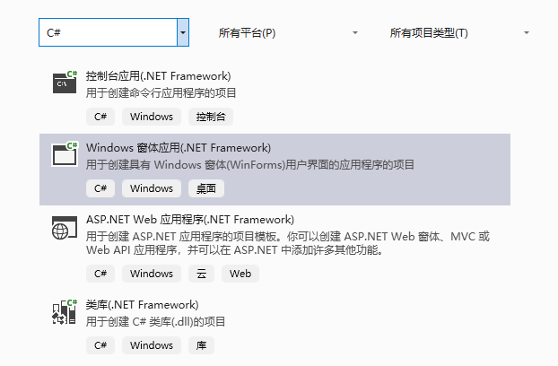
修改项目名称为“TTS_Demo”，点击“创建”。
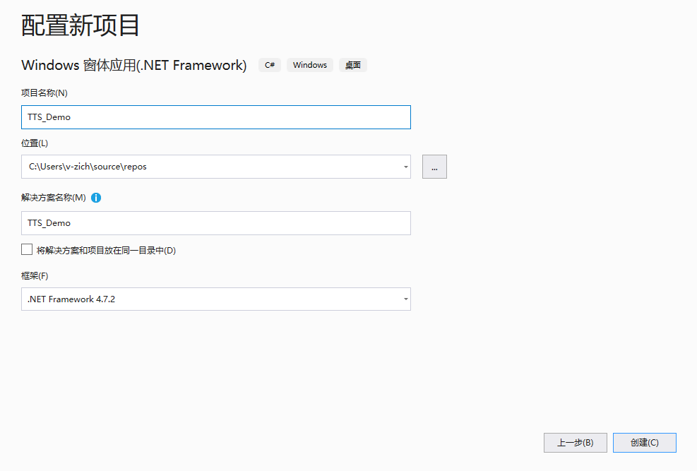
-
点击左侧“工具箱”，选择“公共控件”，选择“Button”。
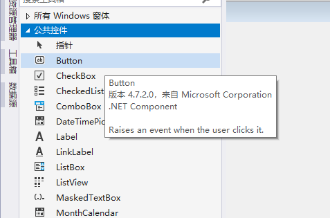
将“button”拖至右侧界面中适当位置，调整大小至合适尺寸。
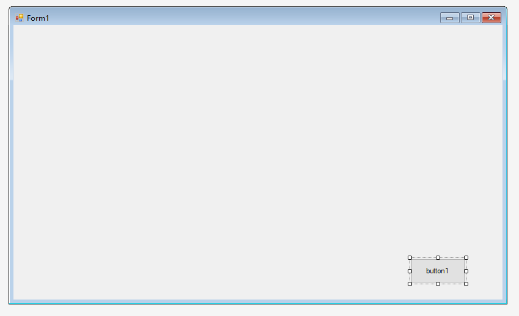
右侧属性框可以设置按钮属性。将Text设置成“保存”，Font设置成“微软雅黑, 10pt”。
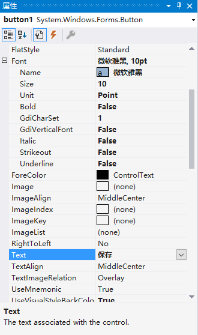
将Design中的Name设置成“saveButton”。
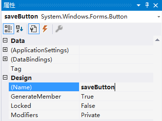
-
按上述方法依次创建按钮“播放”、“生成”，并放置到适当的位置，将其属性框内Design中的Name分别设置成“playButton”、“transferButton”。
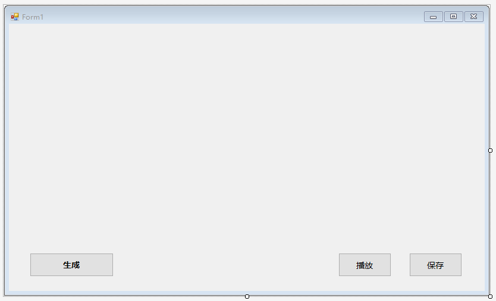
-
在“工具箱”中选择“TextBox”，拖至右侧界面中适当位置。在属性框内的Behavior中的Multiline设置为“True”。在界面中调整TextBox大小至合适尺寸。
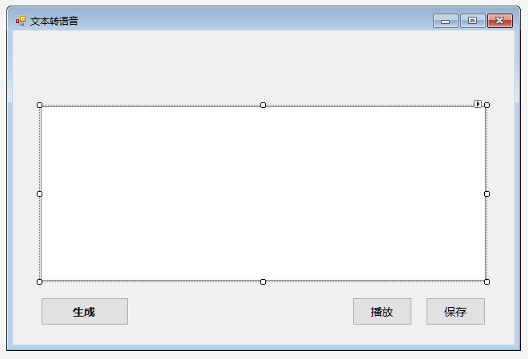
-
在“工具箱”中选择“Label”，拖至界面适当位置，设置属性框中的Text属性为“文本转语音服务”，并设置适当字体。同理，新建“Label”并修改Text属性为“请在下方输入内容”，设置适当字体及颜色。
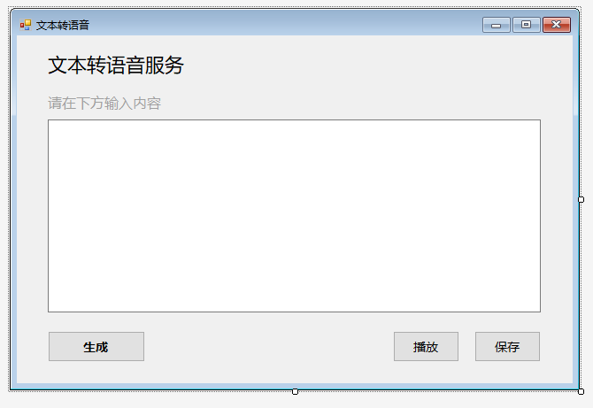
至此，窗体界面的搭建就完成了。
调用api实现TTS⚓︎
注：如对api的使用有任何疑问可以查阅文本转语音 REST API。
-
选择右侧“解决方案资源管理器”中的“TTS_Demo”，右键选择“添加”->“新建项”。
选择“类”，名称为“Authentication.cs”，点击“添加”。
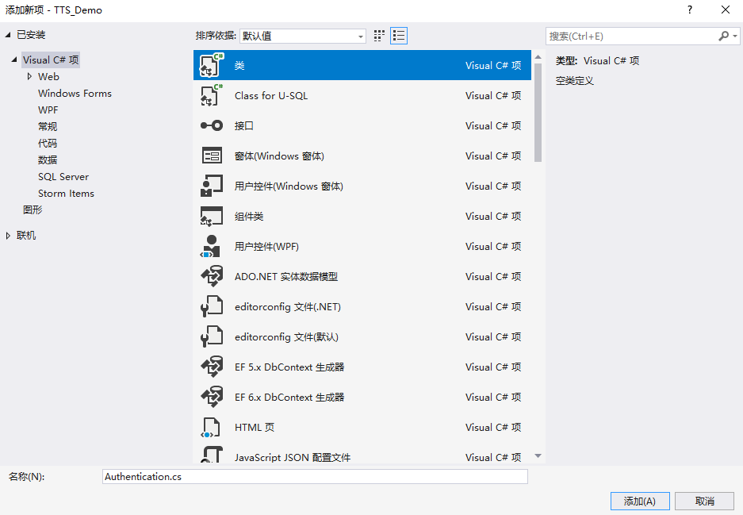
-
在 Authentication.cs 文件中，引用如下命名空间。
using System.Net.Http; using System.IO;添加如下代码。
namespace TTS_Demo { public class Authentication { private string subscriptionKey; private string tokenFetchUri; public Authentication(string tokenFetchUri, string subscriptionKey) { if (string.IsNullOrWhiteSpace(tokenFetchUri)) { throw new ArgumentNullException(nameof(tokenFetchUri)); } if (string.IsNullOrWhiteSpace(subscriptionKey)) { throw new ArgumentNullException(nameof(subscriptionKey)); } this.tokenFetchUri = tokenFetchUri; this.subscriptionKey = subscriptionKey; } public async Task<string> FetchTokenAsync() { using (var client = new HttpClient()) { client.DefaultRequestHeaders.Add("Ocp-Apim-Subscription-Key", this.subscriptionKey); UriBuilder uriBuilder = new UriBuilder(this.tokenFetchUri); var result = await client.PostAsync(uriBuilder.Uri.AbsoluteUri, null).ConfigureAwait(false); return await result.Content.ReadAsStringAsync().ConfigureAwait(false); } } } } -
同理，新建类文件 TTSApi.cs，并添加如下代码。
namespace TTS_Demo { class TTSApi { //语言配置信息 string locale = "zh-CN"; string voiceName = "Microsoft Server Speech Text to Speech Voice (zh-CN, HuihuiRUS)"; string accessToken; Authentication auth = new Authentication("https://westus.api.cognitive.microsoft.com/sts/v1.0/issuetoken", "REPLACE_WITH_YOUR_KEY"); string host = "https://westus.tts.speech.microsoft.com/cognitiveservices/v1"; //转换文本并保存 public async Task textToSpeechAsync(string text, string savePath) { try { accessToken = await auth.FetchTokenAsync().ConfigureAwait(false); } catch (Exception ex) { Console.WriteLine(ex); } string body = "<speak version='1.0' xmlns='https://www.w3.org/2001/10/synthesis' xml:lang='"+locale+"'>" +"<voice name='"+voiceName+"'>" + text + "</voice></speak>"; using (var client = new HttpClient()) { using (var request = new HttpRequestMessage()) { // Set the HTTP method request.Method = HttpMethod.Post; // Construct the URI request.RequestUri = new Uri(host); // Set the content type header request.Content = new StringContent(body, Encoding.UTF8, "application/ssml+xml"); // Set additional header, such as Authorization and User-Agent request.Headers.Add("Authorization", "Bearer " + accessToken); request.Headers.Add("Connection", "Keep-Alive"); // Update your resource name request.Headers.Add("User-Agent", "YOUR_RESOURCE_NAME"); request.Headers.Add("X-Microsoft-OutputFormat", "riff-24khz-16bit-mono-pcm"); // Create a request Console.WriteLine("Calling the TTS service. Please wait... \n"); using (var response = await client.SendAsync(request).ConfigureAwait(false)) { response.EnsureSuccessStatusCode(); // Asynchronously read the response using (var dataStream = await response.Content.ReadAsStreamAsync().ConfigureAwait(false)) { using (var fileStream = new FileStream(savePath, FileMode.Create, FileAccess.Write, FileShare.Write)) { await dataStream.CopyToAsync(fileStream).ConfigureAwait(false); fileStream.Close(); } } } } } } } }其中，需要特别注意以下代码片段：
string locale = "zh-CN"; string voiceName = "Microsoft Server Speech Text to Speech Voice (zh-CN, HuihuiRUS)"; string accessToken; Authentication auth = new Authentication("https://westus.api.cognitive.microsoft.com/sts/v1.0/issuetoken", "REPLACE_WITH_YOUR_KEY"); //替换为你的终结点和Key string host = "https://westus.tts.speech.microsoft.com/cognitiveservices/v1"; -
上述
Authentication的初始化中，需要替换你在TTS-api中分配的终结点和Key。 -
上述的
locale和voiceName允许用户更改不同的语言及发音。具体可选值可以查阅标准语音。以中文为例，我们这里选择了“zh-CN”的“HuiHuiRUS”。 因此我们根据查表内容，将
locale和voiceName变量设置成对应值。其中，voiceName可以选择“完全服务名称映射”或“短语音名称”。
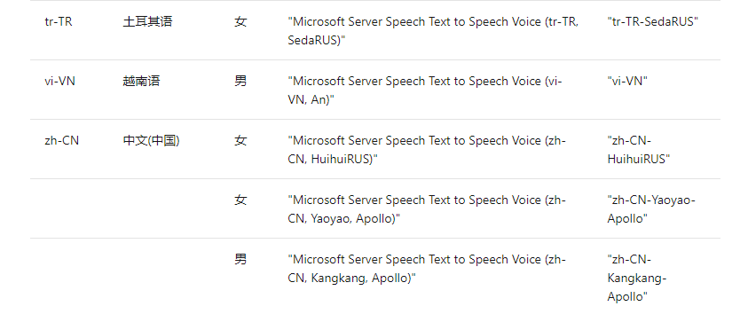
-
在 Form1.cs 中，添加如下代码至
Form1类。string tempFile = "temp.wav"; //临时文件存储路径 TTSApi tts = new TTSApi(); -
在 Form1.cs[设计] 界面中双击“生成”按钮，会自动生成函数
transferButton_Click，该函数绑定了“生成”按钮的点击事件，当用户点击“生成”按钮时会自动调用该函数。完成此函数代码。
private async void transferButton_Click(object sender, EventArgs e) { string text = textBox1.Text; //获取用户输入 if (text.Length > 0) { await tts.textToSpeechAsync(text, tempFile); } } -
同理，双击“播放”按钮，完成
playButton_Click函数代码。private void playButton_Click(object sender, EventArgs e) { SoundPlayer playSound = new SoundPlayer(tempFile); playSound.Play(); } -
双击“保存”按钮，完成
saveButton_Click函数代码。private void saveButton_Click(object sender, EventArgs e) { string filePath = ""; //取前10个字符作为文件名 string fileName = (textBox1.Text.Length < 10) ? textBox1.Text : textBox1.Text.Substring(0, 10); SaveFileDialog saveFile = new SaveFileDialog(); saveFile.FileName = fileName; saveFile.Filter = "音频文件 (*.wav) | *.wav"; saveFile.RestoreDirectory = true; //保存并显示上次打开的目录 if (saveFile.ShowDialog() == DialogResult.OK) { filePath = saveFile.FileName.ToString(); if (File.Exists(tempFile)) { File.Copy(tempFile, filePath, true); } else { Console.WriteLine("音频文件不存在"); } } }
至此，我们就构建好了整个窗体应用。按F5即可运行程序。
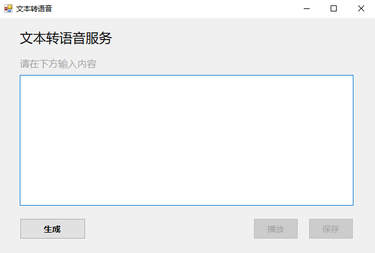
将待朗读的文章复制到文本框，点击“生成”按钮，等待片刻即可生成对应的语音，你可以直接保存生成的音频文件，以便自己使用或分享给家人朋友。
在教程中，我们省略了部分细节，更多内容可以查看源代码。
作业和挑战⚓︎
1. 程序复现⚓︎
按照上述的教程，复现一遍文本朗读的桌面应用程序，要求实现输入文本后能够生成语音并保存到本地。
2. 增加从文件读取文本信息的功能⚓︎
当前的程序需要手动输入或复制内容到文本框，再点击“生成”。但是，当我们需要让计算机朗读长文章时，手动复制内容会十分地麻烦。那么，是否能增加一个功能，从文本文件中读取内容到文本框呢？
可参考如下交互方式来实现。
-
点击按钮“打开文件”
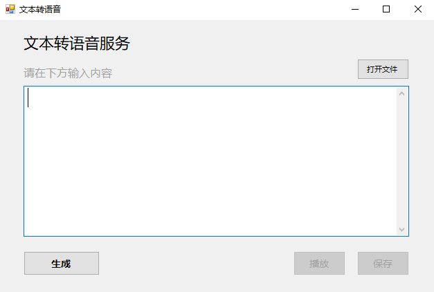
-
选择文本文件
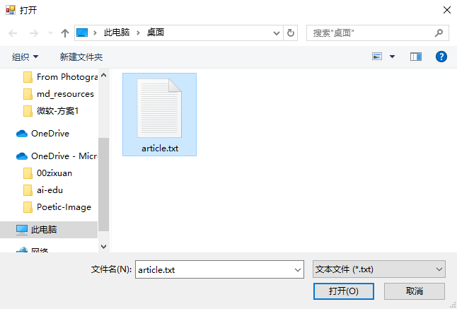
-
根据选择的文件自动加载
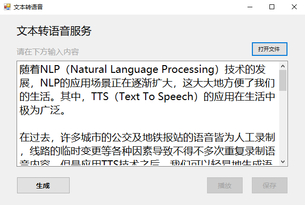
注：我们在源代码中已实现了该功能，可以参考源代码完成该作业。
参考阅读⚓︎
- 《Text-to-Speech Synthesis》, Paul Taylor, University of Cambridge
- Text-to-speech quickstart: Get started with speech synthesis (C#)